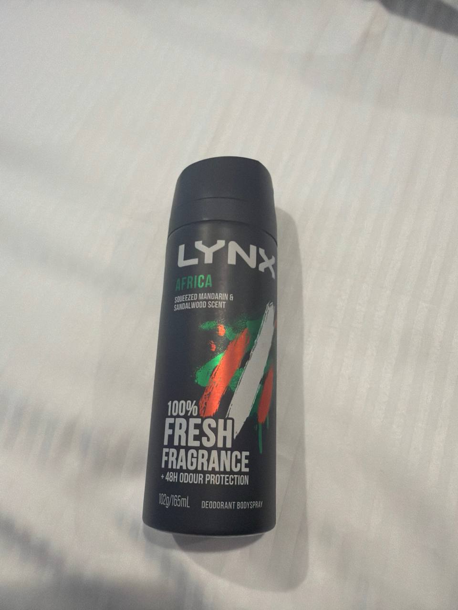

Lynx Africa: The Unforgettable Scent
Unleash the iconic freshness. Everywhere.
Product Details & Legacy 🌍
Lynx Africa has been a cultural phenomenon for decades, synonymous with bold freshness and confident presence. This particular variant, a Deodorant Bodyspray, continues that legacy with its distinct aromatic profile.
- Scent Profile: A vibrant blend of Squeezed Mandarin & Sandalwood. This combination delivers a warm, exotic, and unmistakably masculine fragrance that has captivated users for generations.
- Performance: Engineered for lasting power, it provides 100% Fresh Fragrance coupled with an impressive 48-hour Odour Protection, ensuring you stay confident and fresh throughout the day and well into the night.
- Format & Size: Presented in a convenient 102g / 165ml aerosol can, perfect for a quick refresh anytime, anywhere.
More than just a deodorant, Lynx Africa is a statement. Its enduring popularity speaks volumes about its effectiveness and its place in popular culture. From school locker rooms to festival grounds, its unique scent is instantly recognizable.